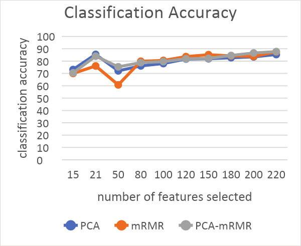
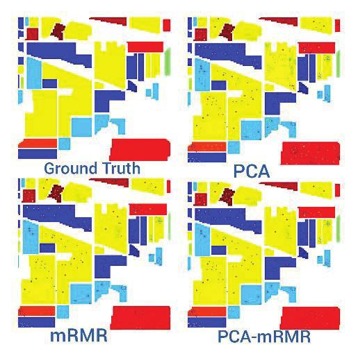

Publications · IEEE IC4ME2 2019
A Hybrid Approach of Feature Selection and Feature Extraction for Hyperspectral Image Classification
International Conference on Computer, Communication, Chemical, Materials and Electronic Engineering (IC4ME2) 2019, 11–12 July 2019. IEEE, pp. 1–4.
Feature extraction combines bands; feature selection discards them. This paper chains the two — PCA first, then mRMR on what PCA produced — and gets the best overall accuracy of the three, from just 21 features out of 220.
Part of the project Dimensionality Reduction for Hyperspectral Imaging
At a glance
- PCA → mRMR hybrid87.72 %Overall accuracy, 21 features
- mRMR alone86.60 %Best at 160 selected features
- PCA alone85.75 %21 components, ~99% of variance
- Dimensionality cut220 → 2190.5% fewer features
Two ways to shrink a hyperspectral image
PCA — extraction
Unsupervised; builds new features
- Projects the 220 bands onto a low-dimensional basis that keeps maximal variance
- Here 21 components carry almost 99% of the variance
- Weakness: nothing guarantees the new features separate the classes well
mRMR — selection
Ranks and keeps original bands
- Minimum Redundancy Maximum Relevance: maximise mutual information with the label, minimise it between features
- Returns a ranked list; accuracy is then checked for the first N
- Best result here came at 160 features
PCA on all 220 bands
Extract components and keep the 21 that cover ~99% of the variance.
mRMR on those 21
Re-rank the components by mutual information, then test each prefix of the ranking.
Classify with SVM
One-vs-rest SVM with an RBF kernel. The full set of 21 turned out to be the best subset.
Results
The data was split 80/20; within the 80%, half became the training set and the remaining 30% a cross-validation set used for model selection.
Overall accuracy and independent-test accuracy
Overall accuracy is measured across the nine classes; ITA is the held-out independent test set. The hybrid leads on both, from a seventh as many features as mRMR needs. The axis starts at 82%, not zero.
- Overall accuracy
- Independent test accuracy
Data table
| Method | Features | Overall accuracy | Independent test accuracy |
|---|---|---|---|
| PCA | 21 | 85.75% | 83.98% |
| mRMR | 160 | 86.60% | 83.11% |
| PCA → mRMR | 21 | 87.72% | 84.08% |
Per-class accuracy
mRMR reaches 100% on Grass-trees and Hay-windrowed; the hybrid is strongest on Corn-notill and Woods. The axis starts at 60%, not zero.
- PCA
- mRMR
- PCA → mRMR
Data table
| Class | Train px | Test px | PCA | mRMR | PCA → mRMR |
|---|---|---|---|---|---|
| Corn-notill | 714 | 428 | 75.87% | 78.27% | 80.84% |
| Corn-mintill | 415 | 249 | 68.07% | 73.49% | 73.49% |
| Grass-pasture | 241 | 145 | 93.81% | 95.86% | 88.27% |
| Grass-trees | 365 | 219 | 98.63% | 100.00% | 98.63% |
| Hay-windrowed | 239 | 143 | 98.95% | 100.00% | 100.00% |
| Soybean-notill | 486 | 292 | 76.92% | 81.09% | 78.69% |
| Soybean-mintill | 1227 | 736 | 84.72% | 84.78% | 84.64% |
| Soybean-clean | 296 | 178 | 73.10% | 86.51% | 75.28% |
| Woods | 632 | 379 | 98.42% | 98.15% | 99.73% |
| Overall | 85.75% | 86.60% | 87.72% | ||
| Independent test | 83.98% | 83.11% | 84.08% |
Figures from the paper


Takeaway
Chaining extraction into selection beats either alone here: the hybrid takes the top overall and independent-test accuracy while carrying 21 features against mRMR’s 160.
The stated goal for future work is the efficiency frontier: the same accuracy from still fewer features.